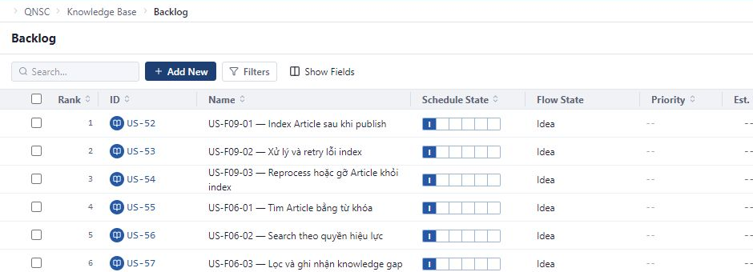
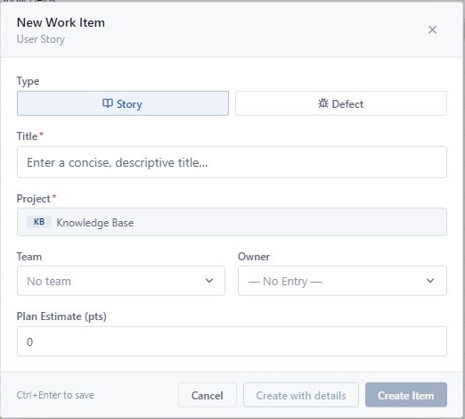

Search
Enter ID as US-52, DE-12 or part of the title to narrow the list.
Backlog is a place to find and manage User Story or Defect has not been included in Iteration. Please check Project, Team and Owner before saving.
Backlog only shows User Story and Defect. Tasks are managed in the parent US or DE details page.

Enter ID as US-52, DE-12 or part of the title to narrow the list.
Filter by Type, Schedule State, Priority, Owner or Release. Remove the filter when you need to review the whole thing.
Select the columns to read. Commonly used columns include status, Priority, Estimate, Owner, Release and Iteration.
Select ID in the table to open the details page. Use Rows per page or page transition buttons when the list is long.
Use User Story for a need or value that needs to be brought to users.

Confirm the correct Project and Team on the context selector before continuing.
Form New Work Item opens with the default type being Story.
Enter Title; check Project; Select Team, Owner and Plan Estimate once determined.
Create Item creates quickly and returns to Backlog. Create with details created and then opened the details page to continue entering.
Item appears in the Backlog of the appropriate Project/Team if it has not been assigned an Iteration and is not covered by the current filter.
Use Defect when the actual behavior differs from the expected result and needs to be monitored and resolved.
Select type Defect, enter Title, check Project then select Team, Owner, Estimate and Parent Story if known.
Use when:You are working in the Backlog and need to quickly log errors.
Enter Title, Description, Severity, Priority, Found In and Root Cause; then select Assignee, Release and User Story as appropriate.
Use when:You need to describe and classify the error from the beginning.

Confirm the correct Project and Team on the context selector, then select Add New.
Title clearly states the expression; Description records the reproduction step, expected results and actual results.
Select Severity, Priority, Found In and Root Cause according to the available information. Can be added later if not determined.
Select Assignee, Release and User Story as appropriate. User Story is an optional parent link within the same Project.
Defect can be opened from Backlog or Quality according to the current scope and filter. This is the same record, no need to recreate it on the other screen.
The right to create a Work Item and the condition to appear in the Owner list are two different things.
Item is located in the Project Backlog. Editor or Workspace Admin is a Team member that is usually not included in Owner without selecting a Team.
This is an Admin view scope, not a Team to assign to Work Item.
Two independent schools but using the same pool of qualified people. You can leave it blank and choose two different people.
Open ID from Backlog to add information that is not in the quick create form.
Select the ID of US or DE. Tabs in use include: Details, Tasks, Connections and Revision History.
Update Title, Description, Notes, Release Notes, Comments, Attachments or Linked Items as needed.
Select Schedule State, Flow State, Owner, Dev Owner, Team, Estimate, Iteration, Release and Milestones. Defect has additional Priority.
US/DE can link Feature. Defect can choose to add Parent Story. Tasks are created in the Tasks tab of the parent US or DE.
Check the order below before recreating or asking someone else to intervene.
Check the context selector, clear Search and Filters, see the next page, then check if the item has entered Iteration.
Choose the correct Team and check membership. If not qualified, keep — No Entry — and ask Workspace Admin to update Team.
Make sure you have selected Story or Defect, entered Title and are in Project, you have permission to create Work Item.
Clear filter, check Project/Team and Iteration. Items that have entered Iteration will no longer be in the Unscheduled Backlog list.